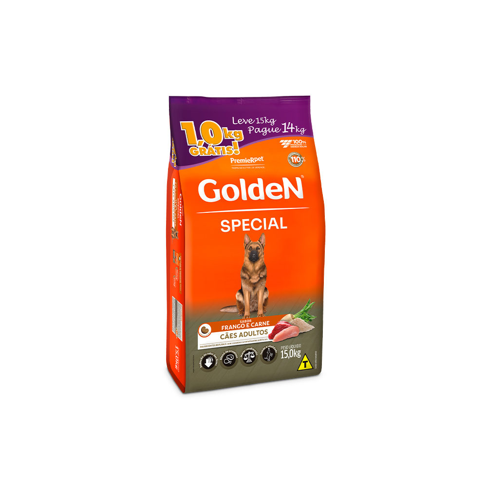
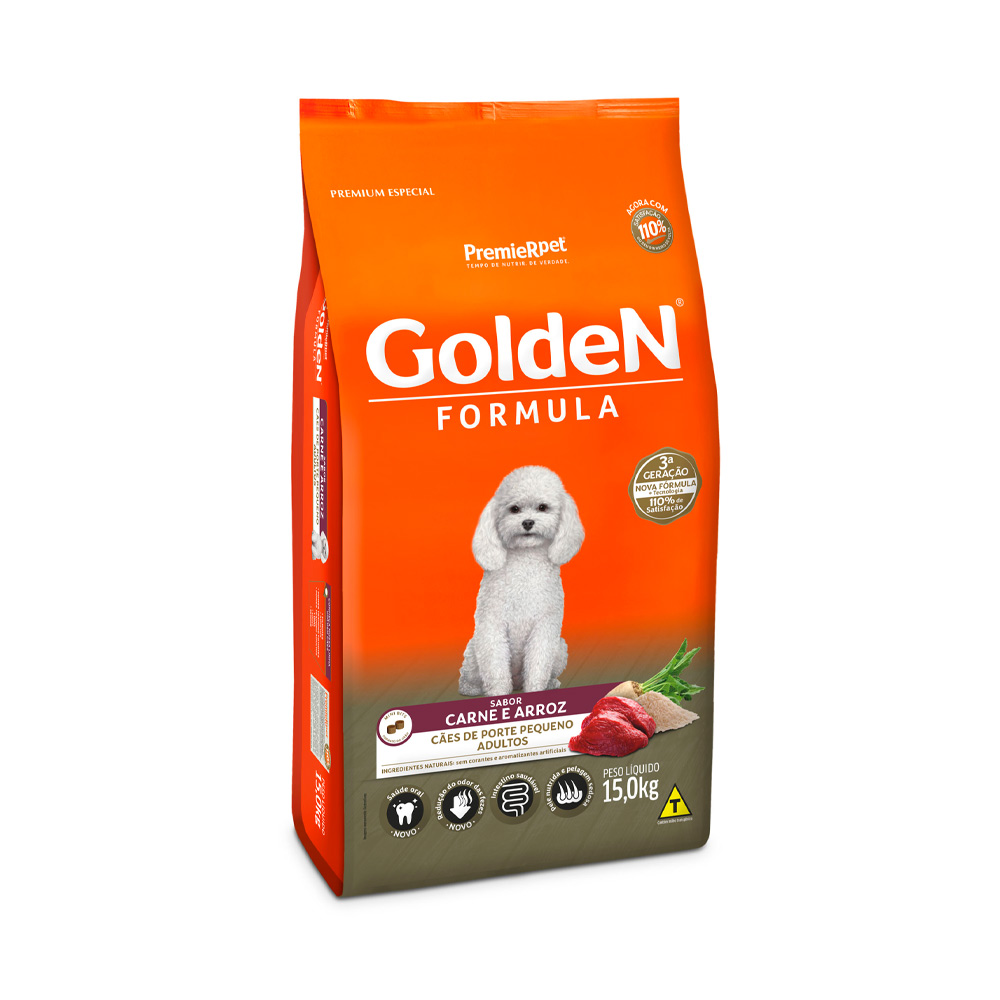

Rações
Rações para cães e gatos
Ração Golden Special para Cães Adultos Sabor Frango e Carne

- Indicada para cães adultos; - Redução do odor das fezes, seleção de ingredientes especiais que auxiliam na redução do odor das fezes; - Blend de proteínas, máxima satisfação para o paladar; - Maior rendimento, ingredientes de alto aproveitamento; - Saúde e vitalidade, alimento de alta qualidade, rico em vitaminas e minerais; - Com antioxidantes naturais; - Embalagens de 15kg.
Valor: R$ 126,99
Ração Golden Fórmula Para Cães Adultos de Porte Pequeno Sabor Carne e Arroz

- Indicada para cães adultos de porte pequeno; - Saúde oral: Auxilia a redução da formação do tártaro; - Redução do odor das fezes: Seleção de ingredientes especiais que auxiliam na redução do odor das fezes; - Intestino saudável: Combinação de ingredientes de alta digestibilidade e fibras naturais; - Pele nutrida e pelagem sedosa: Equilíbrio de ômegas e zinco; - Com antioxidantes naturais; - Embalagens de 15kg.
Valor: R$ 144,90